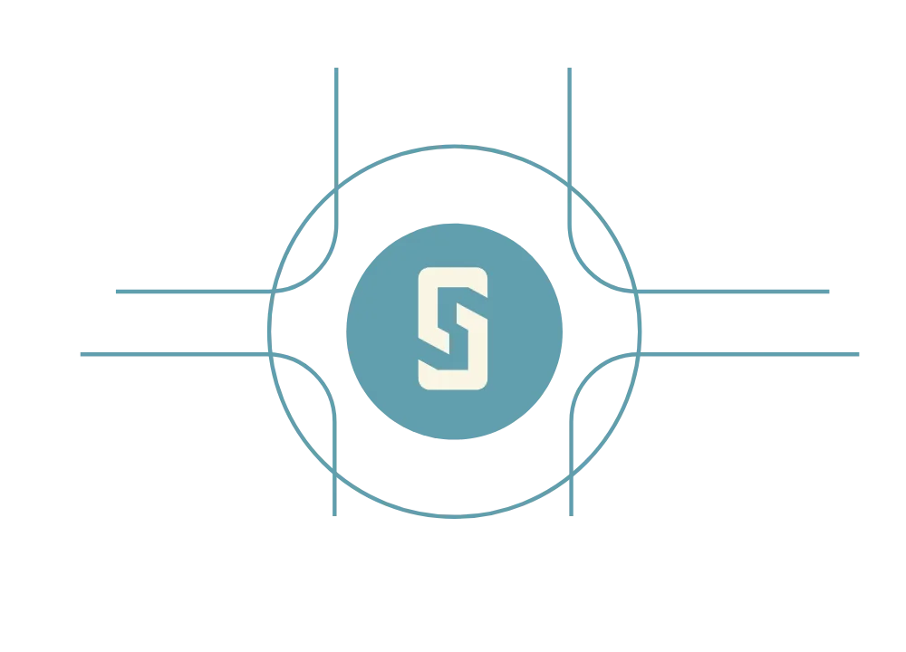

From physical commodity finance to ERC-20 token, with Moody's rating and Swiss-law enforcement throughout.
Commodity trade finance is a relationship business. Access to quality issuers depends on decades of industry presence, established counterparty networks and the ability to assess credit risk that standard models do not capture.
Stoken's origination team operates from Geneva, at the centre of the global commodity trading ecosystem, with direct relationships across Tier 1 trading houses and regional producers. Every facility begins with a full review of the borrower's credit history, loan book, counterparty relationships and trade flows before any external process begins.
The issuer selects the rating structure. Stoken proprietary scoring, an independent Moody's RiskCalc assessment, or both. Moody's RiskCalc is specifically designed for private, unrated companies, exactly the profile of commodity traders and producers.
The result is a forward-looking default probability assigned per facility, giving investors a transparent and independently verified risk assessment before committing capital.
Each facility is issued as an ERC-20 token on Ethereum. Each Stoken represents a single facility with its own rating, yield and maturity. Structured as a Ledger-based Security under the Swiss DLT Act, ownership transfers exclusively on-chain in accordance with Article 973e of the Swiss Code of Obligations.
Every transaction is publicly verifiable on-chain. Wallet whitelisting ensures only verified investors can participate.

Stablecoin DAOPlaced with stablecoin issuers, DAO treasuries, vault curators, family offices and institutional investors through Stoken's network. USDC and USDT conversion supported directly on the platform.
Allocation, conversion and settlement remain coordinated through the Cadmos primary-market platform.
Capital is matched to facilities via smart contract on Ethereum. Once matched, funds are held in escrow until the facility is confirmed and release conditions are met. On confirmation, capital is deployed to the borrower.
On each payment date, coupon payments are received by Stoken and distributed to all investors via smart contract. At maturity, the borrower repays the facility and principal is returned to investors on-chain.
All Stoken issuances are subject to Swiss law, to which both the issuer and investors expressly consent through a choice of law agreement.
The Swiss DLT Act, which entered into force on 1 February 2021, modernized Swiss securities law through Articles 973a to 973f of the Swiss Code of Obligations, enabling the complete dematerialization of debt securities through distributed ledger technology.
Stokens are structured as Ledger-based Securities under Articles 973d to 973f. The right is embodied in the token itself and can only be transferred via the distributed ledger, in accordance with Article 973e CO.
Stoken S.A. is a financial intermediary and member of SO-FIT, a FINMA-recognised Self-Regulatory Organisation operating under the Swiss Anti-Money Laundering Act. Investor verification is handled entirely in-house. No third-party providers. No external dependencies. Only verified, whitelisted wallets can access and participate in Stoken facilities.